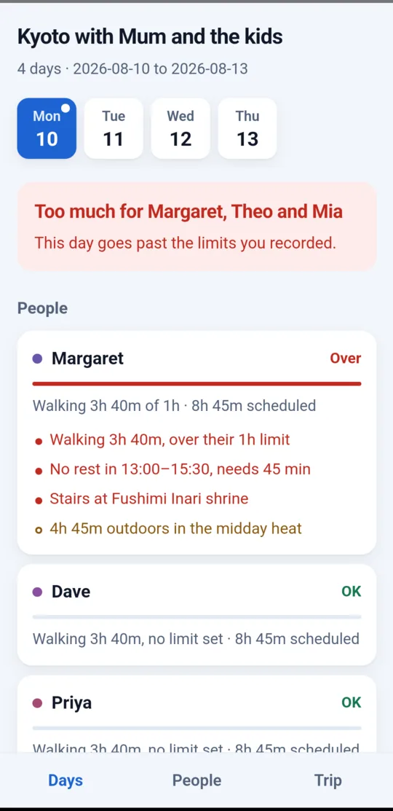
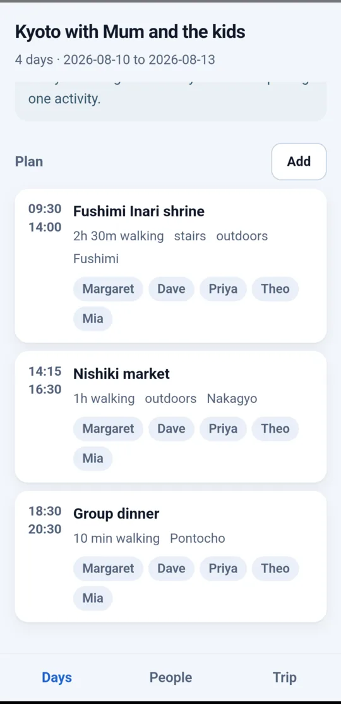
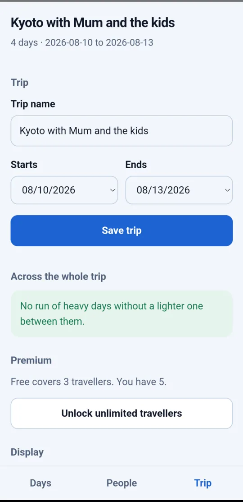

Not an itinerary builder
It won't suggest attractions or fill your days. Bring your own plan — from a spreadsheet, a guidebook, or TabiPlanner.
No other travel app asks that question. TabiPace asks nothing else. Tell it what each traveller can manage, sketch the day, and it tells you who the day will break — and why — before you're standing at the bottom of a hill with a toddler and a cane.
Coming to Google Play

A multigenerational trip rarely fails because nobody knew what to see. It fails at 2pm on day four, when the toddler is past napping, the grandfather has done three flights of temple stairs he shouldn't have, and everyone is too far from the hotel to fix it.
That failure is predictable the night before. It's arithmetic — distance, stairs, heat, rest — done against what each person can actually manage. Nobody does that arithmetic at 11pm. So TabiPace does it.
Three tabs, and none of them ask you what you want to see. They ask what everyone can manage.
How far someone walks in a day, how much rest they need and when, whether stairs or heat are a problem, whether they use a cane. It's the sort of thing a family already knows and has never written down.
The app is careful about this, and says so on the screen: the defaults are a starting point based on age band, not a judgement about anyone. You edit them to match the real person.
Not a minute-by-minute itinerary — just what you're thinking of doing, when, and who's coming. It's a sketch, and it's meant to stay one.

This is the part no other travel app does. The day is scored against every traveller, and where it fails it fails by name, with the specific limit it crossed.
Individual days can each be survivable while the trip as a whole still isn't. TabiPace looks at the shape of the days together and tells you whether the heavy ones are spaced out.

Those markets are crowded and well served. This one wasn't served at all.
It won't suggest attractions or fill your days. Bring your own plan — from a spreadsheet, a guidebook, or TabiPlanner.
No flights, no hotels, no tickets, no affiliate links. It never asks for a payment method.
That's TabiLog's job, and it's a different app on purpose.
TabiPace is mobile-only and deliberately has no back end at all. There is no sign-up, no sync and no cloud copy — the trip lives on the organiser's device and nowhere else.
That's a real constraint, not a marketing line: everyone else in the group receives an exported PDF rather than a login. The trade is fewer features for a much simpler promise about where your family's health and mobility details are kept.
What someone can walk, how they handle heat, when they take medication — none of it is transmitted anywhere, because there is nowhere for it to go.
The whole app is on the device. A mountain village with no bars changes nothing.
Export the plan and send it however you like. No one else needs to install anything.
Version 0.1 is feature-complete and has been verified on a real Android device. The release build is signed and archived. What's left is the Google Play listing itself, which is paperwork rather than code.
When it's live, it'll be announced on the updates page.
Select any screen to see it larger.
Screenshots from the v0.1 Android build, using the example trip.
TabiLog has been in daily use for a while now — separate budgets per traveller, receipts you can file later, and a report at the end that explains itself.